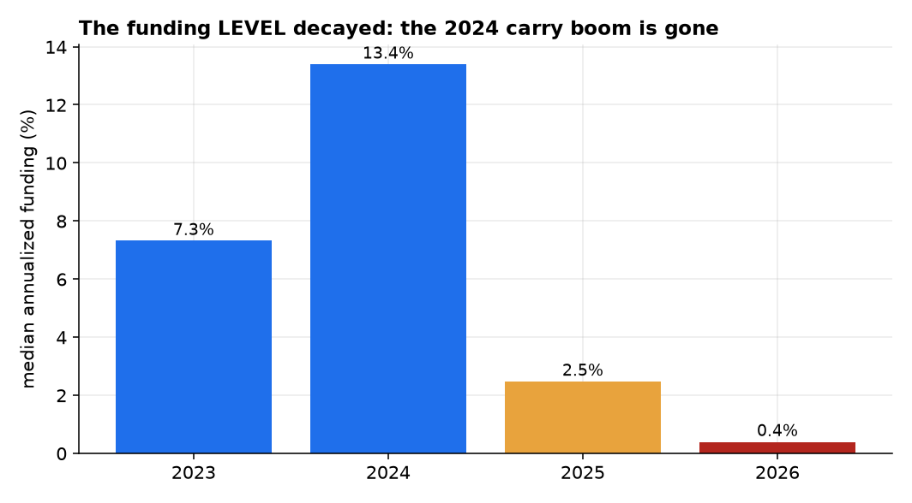
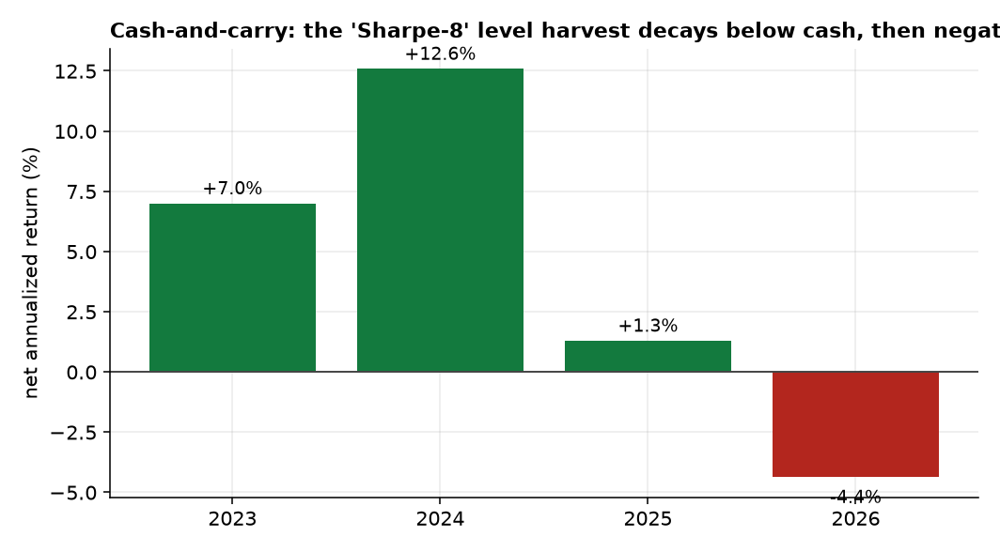
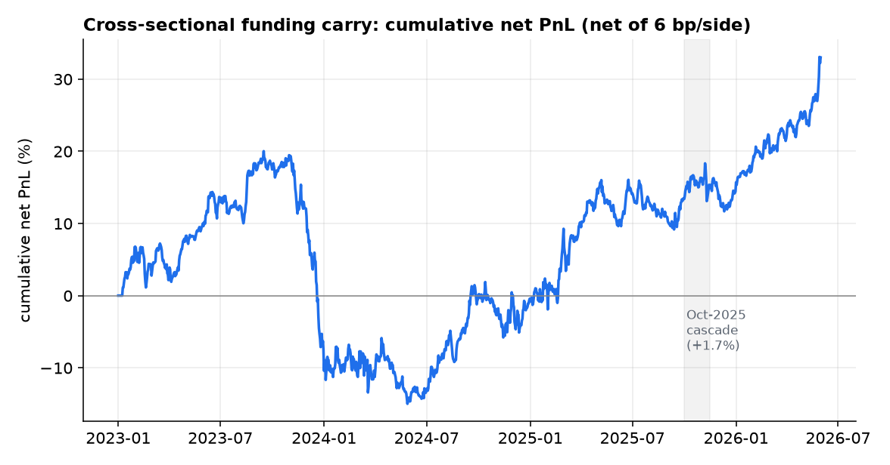
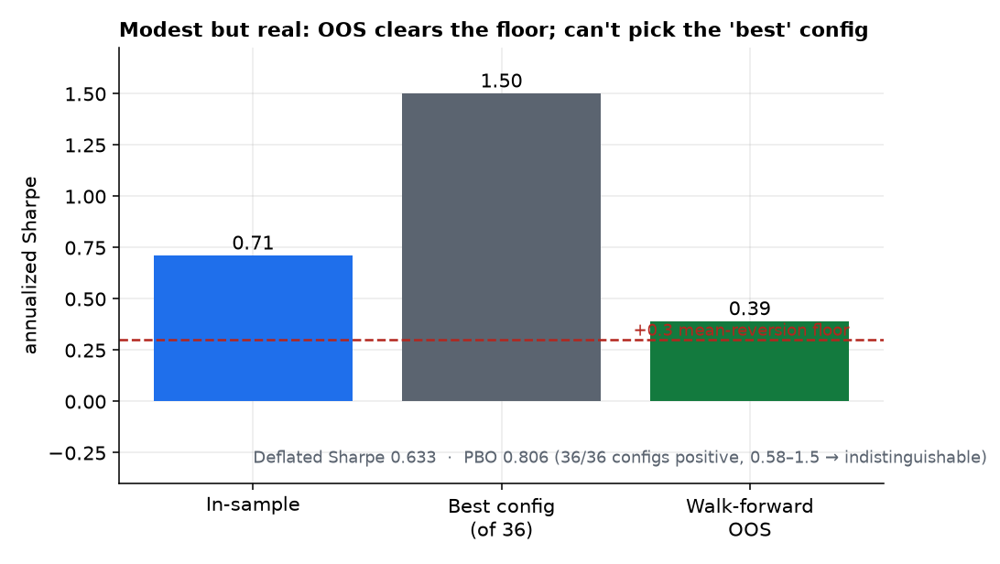

Perpetual-swap funding is the most-cited “carry” in crypto, and the trade that famously printed Sharpe ratios above 6. We ask whether it is harvestable net of costs on a clean 2023–2026 panel (30 Binance USD-M perps, 112,853 funding observations) that spans the full 2024 carry boom. We find two sharply different answers. (1) The funding-level harvest (delta-neutral cash-and-carry) is a Sharpe artifact. Its headline Sharpe of 8.5 is an illusion of funding's near-zero volatility; the honest metric is its net return, which is +5.6%/yr and decaying to negative by 2026 — it no longer beats T-bills, and its dominant risk (the basis / liquidation / de-peg tail) is not even captured by a funding-only model. (2) The cross-sectional funding-carry factor — dollar-neutral, long low-funding / short high-funding perps — is a real but modest edge, and the first in this research program to survive out-of-sample net of costs: in-sample Sharpe 0.71, purged walk-forward OOS Sharpe 0.39 (clearing our +0.3 mean-reversion floor), positive across all 36 configurations (0.58–1.5), robust to dropping any single coin, deflated Sharpe 0.63. The caveats are equally real: a probability of backtest overfitting of 0.81 (the configurations are statistically indistinguishable, so the “best” one cannot be picked — expect ~0.4, not 1.5), a −35% maximum drawdown, and an edge that comes from relative-value dispersion and crowded-long mean-reversion, not from the decayed funding level. The level carry is dead; the cross-section is alive but thin.
A perpetual swap pins itself to spot via a periodic funding payment between longs and shorts. When funding is persistently positive, longs pay shorts — so a short-perp/long-spot position collects a steady yield, the canonical crypto carry trade [1]. Practitioner lore (and many backtests) put its Sharpe above 6. Paper 1 of this series found the volatility risk premium real but not harvestable; here we ask the same hard question of carry — is it harvestable net of costs and net of the liquidation tail? — on a panel that, crucially, spans the 2024 boom and the post-ETF compression, so decay is observable.
We separate two distinct trades that the literature often conflates: the time-series level harvest (collect funding while it is positive) and the cross-sectional factor (bet that high-funding, crowded-long coins underperform low-funding ones). We pre-register falsifiable hypotheses and let the rigor protocol decide:
We backfilled Binance USD-M perpetual funding for 30 liquid coins, 2023-01 → 2026-05 (112,853 funding events, zero gaps), with matched daily spot, from Binance's public data archive. The panel spans the carry boom: cross-sectional median annualized funding ran +7.3% (2023) → +13.4% (2024) → +2.8% (2025) → +0.6% (2026). Two data hazards are handled explicitly:
Leakage control. The ranking signal is the trailing funding mean shifted one day, applied to the next day's funding accrual and price return — no contemporaneous information enters the position. Costs are charged on realized turnover at each rebalance.
From the event-level panel we build a daily funding-accrued grid $f_{i,t}$ (sum of a coin's settlements that day) and daily log returns $r_{i,t}$. Because a long perp pays funding when $f>0$ and a short receives it, a portfolio with weights $w$ earns funding PnL $-\sum_i w_{i}f_{i}$.
Cash-and-carry (level): while a coin's trailing funding exceeds zero, hold long-spot/short-perp and collect funding; equal-weight across qualifying coins, charging a round-trip cost on each entry. Cross-sectional factor: each week, rank coins by trailing-7-day funding, go long the bottom tercile and short the top tercile of perps, dollar-neutral (gross exposure 1.0); daily PnL is the price spread $\sum_i w_i r_i$ plus the funding harvested $-\sum_i w_i f_i$, net of turnover cost. We use spot returns as the perp-price proxy (basis is small for liquid perps) and a realistic 6 bp/side taker+slippage cost (swept 0–15 bp).
Every candidate must clear: a degenerate-signal check (run first, always); the deflated Sharpe ratio [3] against the expected-max-Sharpe for the number of configurations tried; the probability of backtest overfitting via CSCV [4]; purged + embargoed walk-forward; tail-aware metrics (max-drawdown, worst day, skew) rather than Sharpe alone; and the +0.3-Sharpe mean-reversion floor as the practical bar.
The funding level collapsed after 2024 (Figure 1). The delta-neutral cash-and-carry that harvests it posts an absurd Sharpe of 8.5 — but that is an artifact: funding is a near-constant, ultra-low-volatility stream, so the mean/standard-deviation ratio explodes while a funding-only model omits the trade's real risk (basis blow-outs, forced liquidation, stablecoin de-pegs — the Oct-2025 cascade liquidated “delta-neutral” books industry-wide). The honest metric, net return, tells the real story (Figure 4): +5.6%/yr full-sample, decaying year-by-year to negative in 2026 — it no longer beats the ~5% risk-free rate. This is the same smooth-signal trap that, in a prior in-house system, let constant predictors post double-digit backtest Sharpes and then lose money live.


Unlike the level, the cross-sectional dispersion in funding is harvestable. Going long low-funding and short high-funding perps, dollar-neutral, earns a net Sharpe of 0.71 in-sample (gross 0.90) and — the number that matters — a purged walk-forward OOS Sharpe of 0.39, clearing the +0.3 floor. It is not driven by the funding level (which decayed) but by relative-value dispersion and the mild mean-reversion of crowded longs; it survived the Oct-2025 cascade (+1.7% over the window) because the dollar-neutral structure hedges the market crash. The cost is a real −35% maximum drawdown (Figure 2).

| Net Sharpe | 2023 | 2024 | 2025 | 2026* | Full IS | Walk-fwd OOS |
|---|---|---|---|---|---|---|
| Cross-sectional factor | −0.57 | 0.45 | 1.17 | 4.26* | 0.71 | 0.39 |
*2026 is ~5 months (≈20 rebalances) — too short to read as an annualized Sharpe; shown for completeness.
The factor passes the gauntlet — with one honest wrinkle. All 36 configurations (lookback × quantile × rebalance) are positive (0.58–1.5), it is robust to dropping any single coin (0.54–0.99), and its deflated Sharpe is 0.63 (best 0.96). But the probability of backtest overfitting is 0.81 — which here does not mean “no edge.” It means the configurations are statistically indistinguishable (a tight 0.58–1.5 cluster), so the in-sample-best config is no better than a coin-flip out-of-sample. The lesson is precise: there is a real common edge, but you cannot select the 1.5-Sharpe variant and expect it — the honest expectation is the OOS ~0.4 (Figure 3).

Does extreme funding forecast price? Pooled cross-sectional rank-IC between trailing funding and forward 7-day return is −0.005 (t = −0.89, n = 1,240 days) — correctly signed (crowded longs underperform) but not significant. The factor's edge is the harvested funding spread, not a price forecast; the crowded-long reversal is, at best, a faint tailwind.
Carry in crypto bifurcates. The level trade — the famous one — is finished as a risk-adjusted edge: the premium has been competed down below cash, its high Sharpe is an artifact of funding's smoothness, and its true risk is a fat left tail that a funding-only backtest never sees. That is the cautionary half.
The crypto funding level is a decayed, tail-dominated, artifact-Sharpe trade that no longer beats cash; but the cross-sectional funding factor is a genuine, modest, cost-surviving, out-of-sample-positive edge — the first in this program.
The constructive half: the cross-section of funding still pays a relative-value premium that clears realistic costs out-of-sample (~0.4 Sharpe). It is modest, tail-heavy (−35% drawdown), and its configuration cannot be fine-tuned (PBO 0.81), so it would enter a portfolio sized small and vol-targeted, valued for diversification rather than standalone return. Against Paper 1 — a real premium with no tradable edge — this is the mirror image: a thinner premium that is (barely) tradable. Both results were only reachable by refusing the flattering backtest number (the 8.5 and the 1.5) and reporting the honest one (the +5.6% decaying to negative, and the 0.39).
Spot-as-perp proxy. We use spot returns for the perp price leg and a funding-only model for cash-and-carry; we do not have a separate historical perp mark or order book, so we cannot price basis convergence, funding-clamp dynamics, or — most importantly — the forced-liquidation tail that dominates the level trade's real risk. The cash-and-carry Sharpe is reported precisely to expose this gap, not to claim an edge. Single venue, no point-in-time universe. Binance only; the 30-coin set is today's liquid names, so survivorship is imperfect (delisted/zero-funding coins beyond MATIC are not reconstructed). Tail & capacity. The −35% drawdown and the short-leg squeeze risk in crypto mean live sizing must be vol-targeted and small; capacity in the smaller perps is limited. Future work: add a vol-targeted, defined-risk overlay to the cross-sectional factor; reconstruct a point-in-time, survivorship-free universe with delisted coins; and model the liquidation tail explicitly using the Coinalyze open-interest/liquidation series before any live deployment.